0. Словарь
| Слово | Простыми словами |
|---|---|
| Ресурс | Числовое поле, которое СКД считает в итогах: количество, сумма |
| Агрегатная функция | Как считать итог: Сумма, Количество, Среднее, Максимум, Минимум |
| Итог | Строка, где ресурсы посчитаны по группе строк. Бывает итог группировки и общий итог («Итого») |
| Группировка по полю | Свернуть строки с одинаковым значением поля в одну строку-заголовок, под которой — её строки |
| Детальные записи | Из задачи 4.1: группировка без поля, строки запроса как есть |
| Иерархия | Папки в справочнике: группа «Периферия», в ней «Мышь» |
| Тип группировки | Как учитывать иерархию: «Без иерархии», «Иерархия», «Только иерархия» |
| Вычисляемое поле | Новое поле, которое СКД считает по формуле из других полей. В запросе его нет |
| Язык выражений СКД | Язык формул в СКД. Похож на язык запросов: ВЫБОР КОГДА … ТОГДА … ИНАЧЕ … КОНЕЦ, + - * / |
| Формат | Как показывать значение: сколько знаков после запятой, разделители |
| ЧДЦ | «Число дробных цифр» — знаков после запятой. ЧДЦ=2 → 240,91 |
1. Что это, зачем, где найти
Какую проблему решаем
В задаче 4.1 отчёт «Продажи за период» вывел «Мышь» двумя строками: 8 шт. и 3 шт. Вопрос «сколько всего продали мышек?» пришлось бы считать в уме. Строки «Итого» тоже не было.
Пользователь хочет видеть так:
| Товар | Количество | Сумма |
|---|---|---|
| Мышь | 11 | 2 650 |
| Ноутбук | 2 | 110 000 |
| Итого | 13 | 112 650 |
Для этого нужны три инструмента:
| Инструмент | Отвечает на вопрос | Где |
|---|---|---|
| Группировка | По какому полю сворачивать строки? | «Настройки» → структура |
| Ресурсы | Какие поля считать в свёрнутой строке и как? | «Ресурсы» |
| Вычисляемые поля | Нужна колонка, которой нет в запросе? | «Вычисляемые поля» |
Главная идея: измерения и ресурсы
Каждое поле в отчёте играет одну из двух ролей:
| Роль | Что делает | Пример | Где задаётся |
|---|---|---|---|
| По чему группируем | Делит строки на группы | Товар |
Группировка в структуре |
| Что считаем | В строке группы показывает итог по её строкам | Количество, Сумма |
Вкладка «Ресурсы» |
Если поле не ресурс, СКД не знает, что показать в строке группы, и оставляет ячейку пустой. Это поведение ты увидишь в шаге 4.
Как СКД строит строку группы
- Берёт строки запроса: «Мышь 8 / 1 000», «Мышь 3 / 1 650», «Ноутбук 2 / 110 000».
- Делит их по полю группировки: группа «Мышь» — 2 строки, группа «Ноутбук» — 1 строка.
- Для каждой группы считает ресурсы по их выражениям:
Сумма(Количество)= 8 + 3 = 11. - Ещё раз считает ресурсы по всем строкам — это «Итого».
2. Как сделать
Работаем в отчёте «Продажи за период» из задачи 4.1.
Шаг 1. Ресурсы
Что делаем. Вкладка «Ресурсы». Слева — все поля набора, справа — ресурсы.
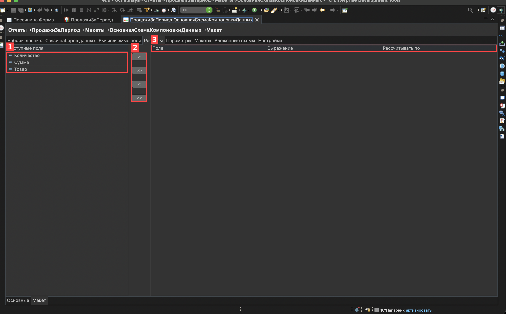
| № | Что это |
|---|---|
| 1 | Доступные поля набора |
| 2 | Кнопки переноса: > — одно поле, >> — все числовые |
| 3 | Ресурсы: поле, выражение, «Рассчитывать по» |
Перенеси вправо Количество и Сумма.
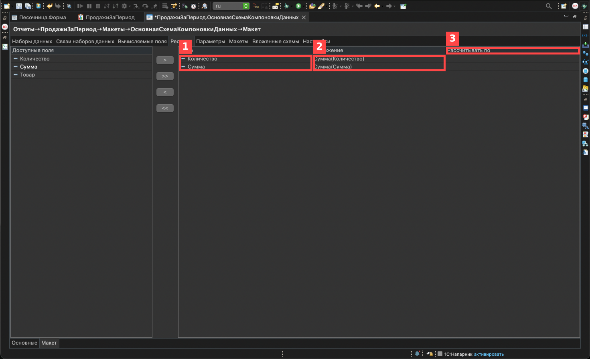
| № | Что это |
|---|---|
| 1 | Поля-ресурсы |
| 2 | Выражение. По умолчанию Сумма(<поле>) — сложить значения всех строк группы |
| 3 | «Рассчитывать по» — пусто, значит считать на всех уровнях. Подробнее в справочнике |
Что такое выражение ресурса. Это формула, по которой СКД считает итог. Сумма(Количество) значит «сложи Количество всех строк группы». Для количества и суммы денег это правильно: 8 мышек + 3 мышки = 11 мышек.
Кнопка … в ячейке выражения открывает редактор:
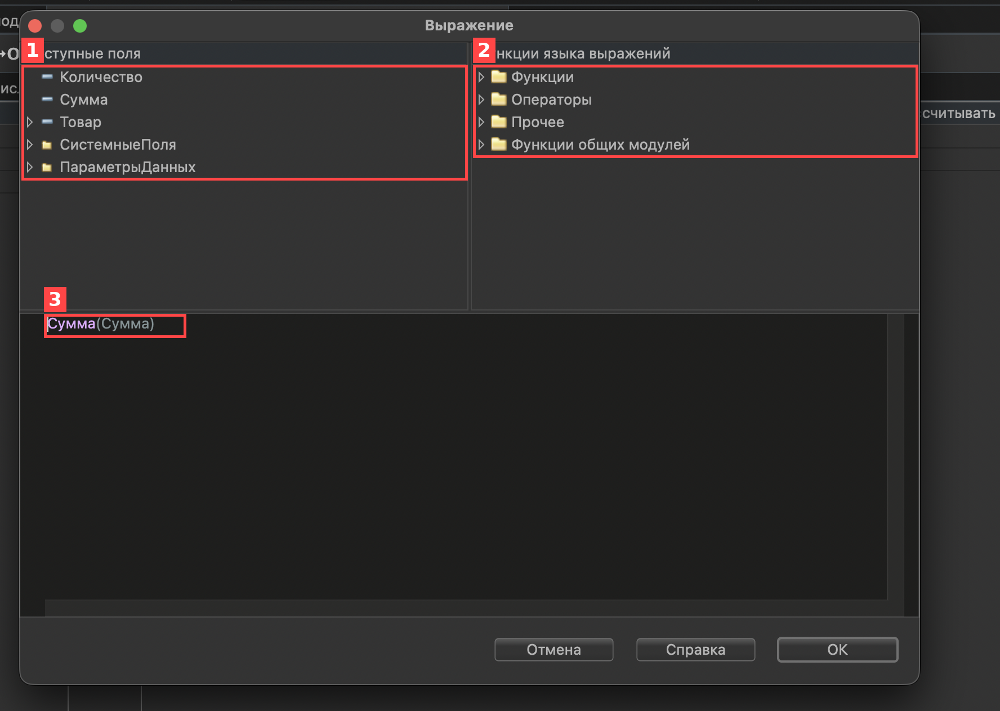
| № | Что это |
|---|---|
| 1 | Поля, которые можно использовать в формуле |
| 2 | Функции языка выражений: агрегатные, математические, функции общих модулей |
| 3 | Сама формула |
Агрегатные функции — чаще всего нужны эти:
| Функция | Что делает | Когда |
|---|---|---|
Сумма |
Складывает | Количество, деньги |
Количество |
Считает строки | Сколько документов, сколько сотрудников |
Среднее |
Среднее арифметическое | Редко — см. ловушку 1 |
Максимум / Минимум |
Наибольшее / наименьшее | Последняя дата, максимальная цена |
Шаг 2. Группировка по товару
Что делаем. «Настройки» → удали «Детальные записи» → выдели «Отчет» → «Новая группировка» → в поле выбери Товар.
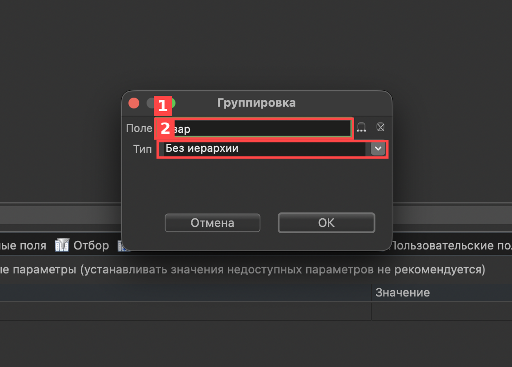
| № | Что это |
|---|---|
| 1 | Поле группировки — Товар. В 4.1 оно было пустым, поэтому получались детальные записи |
| 2 | Тип группировки |
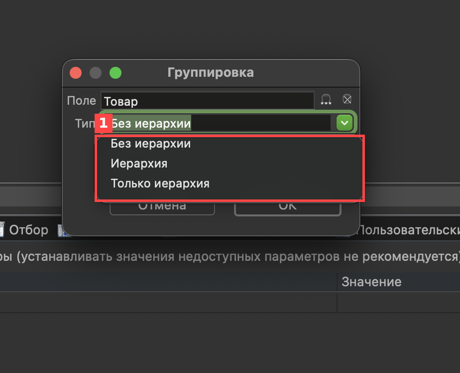
| № | Что это |
|---|---|
| 1 | Варианты учёта иерархии |
Что такое тип группировки. Он важен, только если справочник иерархический — с папками. Пусть в «Товарах» есть группа «Периферия», а в ней «Мышь» и «Клавиатура»:
| Тип | Что покажет |
|---|---|
| Без иерархии | Только товары: «Мышь», «Клавиатура». Папок нет |
| Иерархия | Папку «Периферия» с итогом, под ней товары |
| Только иерархия | Только папку «Периферия» с итогом, без товаров |
В нашем справочнике папок нет, поэтому оставляем «Без иерархии».
Теперь выдели группировку Товар и добавь в неё «Новая группировка» с пустым полем — детальные записи внутри товара.
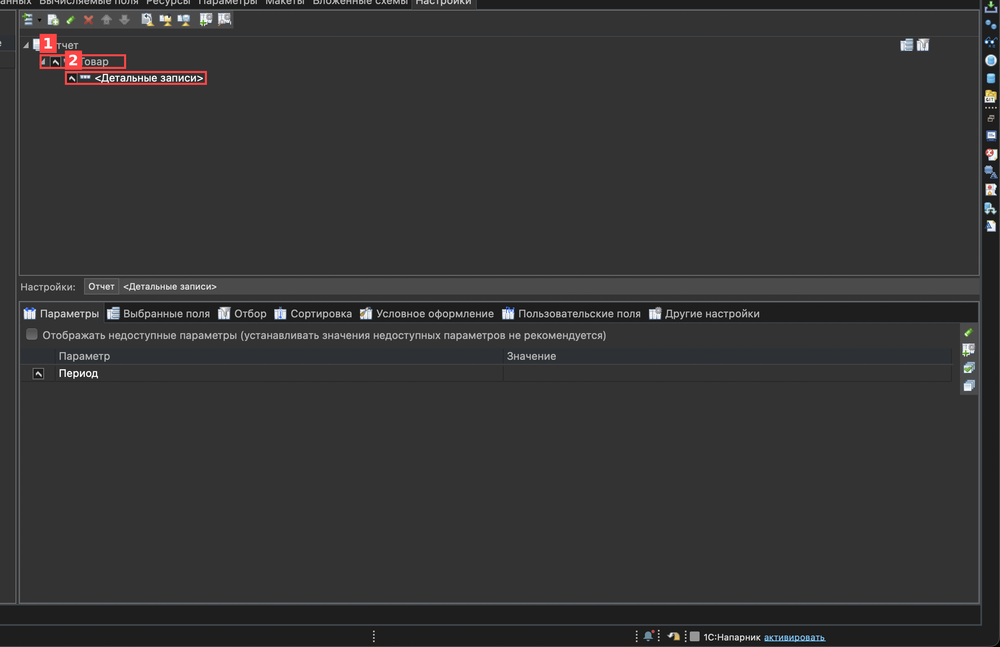
| № | Что это |
|---|---|
| 1 | Группировка Товар — строки-заголовки по каждому товару |
| 2 | «Детальные записи» внутри — строки, из которых сложился товар |
Как читать структуру. Вложенность в дереве = вложенность в отчёте. «Детальные записи» внутри Товар значит: «под каждым товаром покажи его строки».
Шаг 3. Выбранные поля
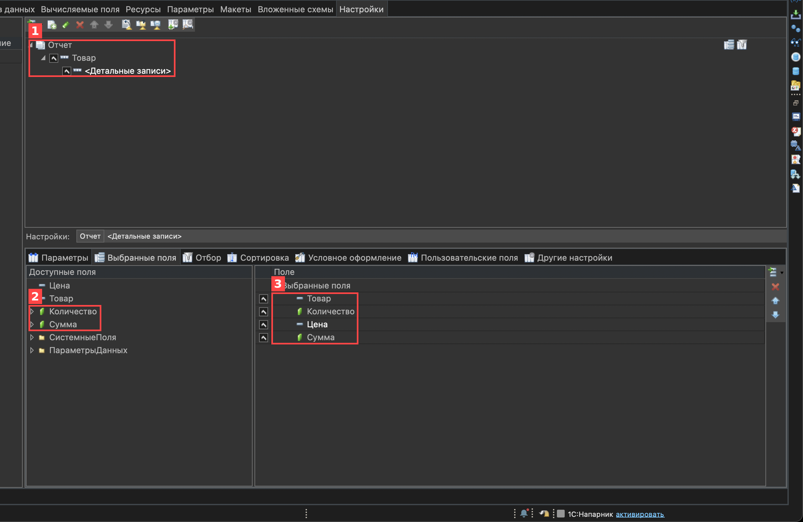
| № | Что это |
|---|---|
| 1 | Структура |
| 2 | Зелёный значок — поле стало ресурсом |
| 3 | Выбранные поля: ресурсы стоят вместе с обычными полями |
На скрине уже есть
Цена— скрин сделан позже. Сейчас её у тебя нет, она появится в шаге 4. ВыбериТовар,Количество,Сумма.
Значок помогает быстро проверить: если у Сумма нет зелёного значка, итогов по ней не будет.
Результат шагов 1–3
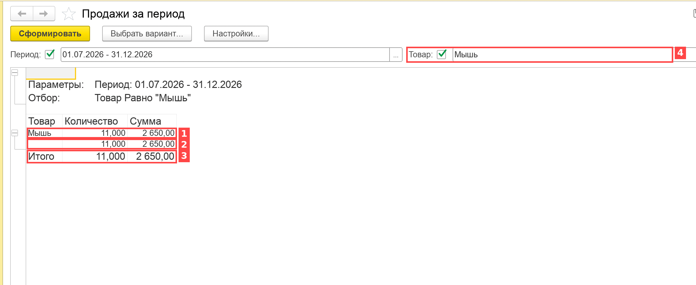
| № | Что это |
|---|---|
| 1 | Строка группы «Мышь»: ресурсы посчитаны по её строкам |
| 2 | Детальная запись |
| 3 | «Итого» — ресурсы по всем строкам отчёта |
| 4 | На скрине включён отбор по «Мыши», поэтому других товаров нет. Без отбора будут все товары |
Почему под «Мышью» одна строка 11, а не две — 8 и 3? Когда в отчёте есть ресурсы, СКД сливает детальные записи с одинаковыми значениями всех остальных выбранных полей. Из нересурсных полей выбран только Товар, у обеих строк он «Мышь» — значит, строки слились. В 4.1 ресурсов не было, и строки шли как есть.
Чтобы детальные строки разделились, нужно поле, которое у них различается, например документ или дата. Это практика Б.
Без «Детальных записей» отчёт короче — только итоги по товарам:
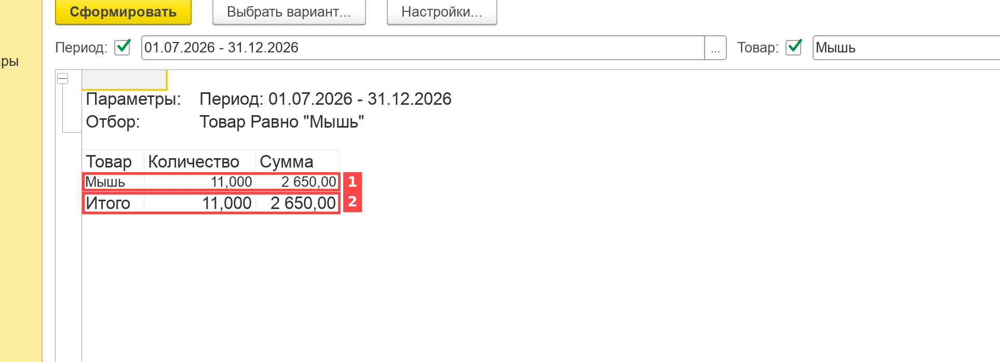
| № | Что это |
|---|---|
| 1 | Строка товара, без детальных записей под ней |
| 2 | Общий итог |
Шаг 4. Вычисляемое поле
Задача. Пользователь хочет видеть среднюю цену продажи. В документе её нет: есть количество и сумма. Можно поменять запрос, но проще посчитать прямо в СКД: цена = сумма / количество.
Что делаем. Вкладка «Вычисляемые поля» → добавить.
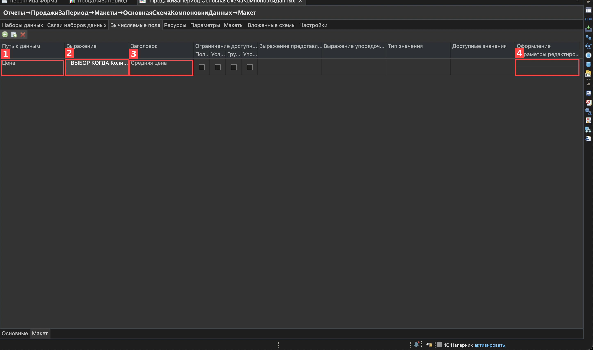
| № | Что это |
|---|---|
| 1 | «Путь к данным» — имя поля. По нему поле видно в настройках и в других формулах |
| 2 | «Выражение» — формула. Именно в эту колонку, не в «Выражение представления» |
| 3 | «Заголовок» — название колонки в отчёте |
| 4 | «Оформление» — формат, цвет. Понадобится в шаге 6 |
Формула:
ВЫБОР КОГДА Количество = 0 ТОГДА 0 ИНАЧЕ Сумма / Количество КОНЕЦ
Зачем ВЫБОР. Если количество 0, деление на ноль сломает формирование отчёта. ВЫБОР — тот же оператор, что в языке запросов: при нуле возвращаем 0, иначе делим.
Добавь Цена в выбранные поля и сформируй:
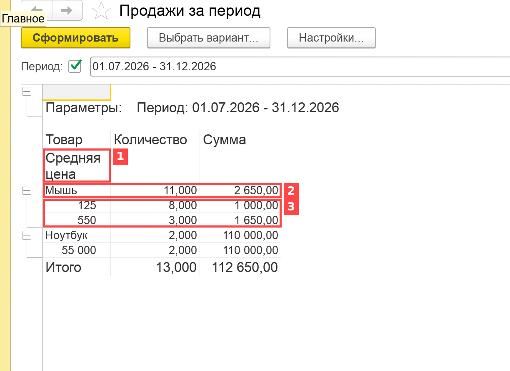
| № | Что это |
|---|---|
| 1 | «Средняя цена» уехала в колонку товара |
| 2 | В строке группы цены нет |
| 3 | Детальные записи разделились: 125 и 550 |
Почему так получилось. Вычисляемое поле считается для каждой строки запроса: 1 000 / 8 = 125, 1 650 / 3 = 550. Но Цена — не ресурс. Значит:
- в строке группы СКД не знает, как получить одну цену из двух, и оставляет пусто (2);
Ценастала нересурсным полем, у двух строк она разная — строки больше не сливаются (3);- нересурсные поля детальных записей СКД выводит в колонке группировки (1).
Шаг 5. Ресурс для вычисляемого поля
Чтобы цена была в строках групп и в «Итого», Цена нужно сделать ресурсом. Но выражение по умолчанию тут не подходит:
[вложение недоступно: 10_oshibka_summa_ceny.png]
Ошибка: ресурс
Сумма(Цена)
| № | Что это |
|---|---|
| 1 | У «Мыши» 675 = 125 + 550. СКД сложила цены |
| 2 | Итого 55 675 — сумма цен всех товаров. Бессмыслица |
Цены нельзя складывать. И среднее тоже не подходит: Среднее(Цена) = (125 + 550) / 2 = 337,50. Но 8 мышек продали по 125, а 3 — по 550, мышек по 125 больше, и средняя должна быть ближе к 125.
Правильная средняя цена = вся сумма / всё количество = 2 650 / 11 = 240,91. Формула ресурса:
ВЫБОР КОГДА Сумма(Количество) = 0 ТОГДА 0 ИНАЧЕ Сумма(Сумма) / Сумма(Количество) КОНЕЦ
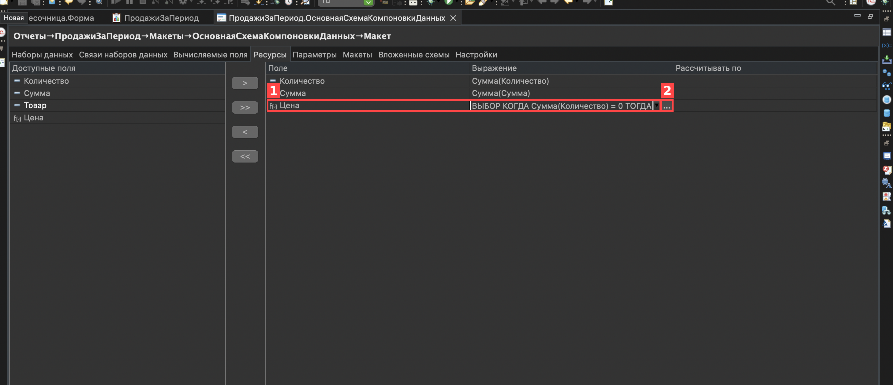
| № | Что это |
|---|---|
| 1 | Выражение ресурса: сначала сложить суммы и количества группы, потом поделить |
| 2 | Кнопка … — открыть редактор выражения |
Правило: складываются только величины, которые имеют смысл в сумме: штуки, деньги, часы. Цены, проценты, курсы — никогда. Их итог считается из итогов других ресурсов.
Шаг 6. Формат
После шага 5 цена выводится так:
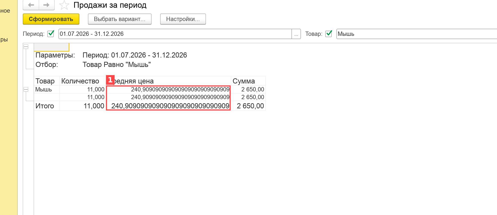
| № | Что это |
|---|---|
| 1 | 2 650 / 11 = 240,909090… — СКД показывает все знаки |
Что делаем. «Вычисляемые поля» → у Цена колонка «Оформление» → «Формат».
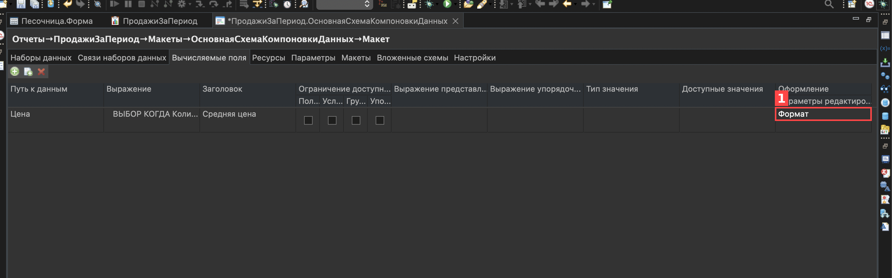
| № | Что это |
|---|---|
| 1 | Открыть настройки оформления |
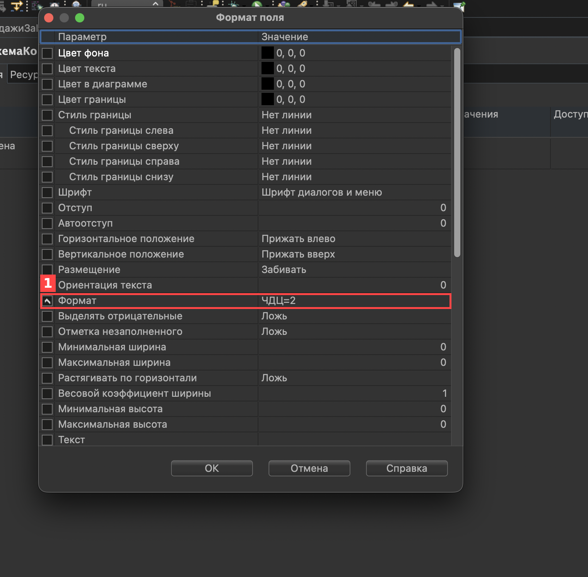
| № | Что это |
|---|---|
| 1 | Параметр «Формат». Галка слева — использовать его |
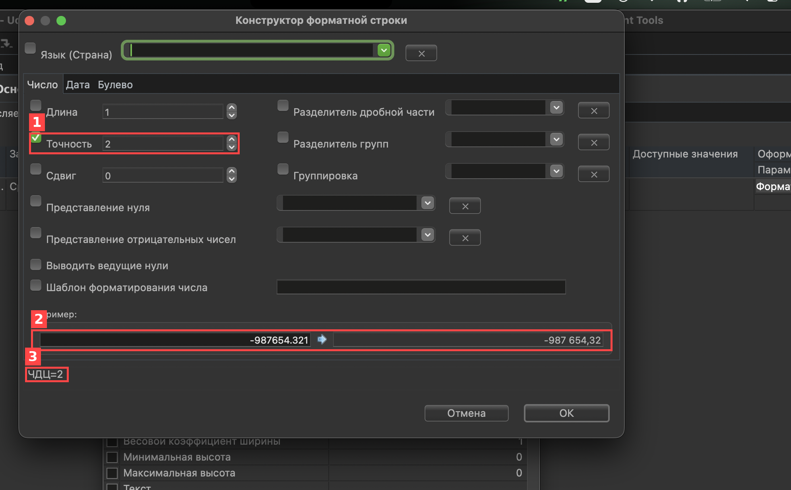
| № | Что это |
|---|---|
| 1 | «Точность» — знаков после запятой |
| 2 | Пример: как будет выглядеть число |
| 3 | Получившаяся форматная строка ЧДЦ=2 |
Формат меняет только показ. Внутри значение остаётся точным, итоги считаются по точным числам.
3. Итоговый вид
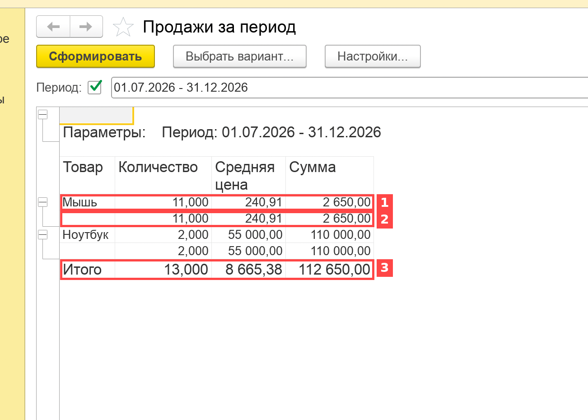
| № | Что это |
|---|---|
| 1 | Строка группы: средняя цена посчитана ресурсом |
| 2 | Детальная запись |
| 3 | «Итого»: 112 650 / 13 |
Проверь себя по цифрам:
| Количество | Сумма | Средняя цена | |
|---|---|---|---|
| Мышь | 8 + 3 = 11 | 1 000 + 1 650 = 2 650 | 2 650 / 11 = 240,91 |
| Ноутбук | 2 | 110 000 | 110 000 / 2 = 55 000 |
| Итого | 13 | 112 650 | 112 650 / 13 = 8 665,38 |
4. Ловушки
- Ресурс цены через
СуммаилиСреднее. Симптом: у группы цена больше всех её строк (675) или «Итого» бессмысленное. Причина: цены сложили. Итог цены = итог суммы / итог количества. - Формула не в той колонке. Симптом: вычисляемое поле пустое. Причина: формула в «Выражение представления», а «Выражение» пустое.
- Деление на ноль. Симптом: ошибка при формировании. Причина: нет защиты
ВЫБОР КОГДА … = 0. - Поле не ресурс. Симптом: в строке группы и в «Итого» ячейка пустая. Причина: поле не добавлено на вкладку «Ресурсы».
- Ждёшь две детальные строки, а видишь одну. Причина: при наличии ресурсов СКД сливает строки с одинаковыми нересурсными полями. Это не ошибка.
5. Практика А
Отчёт «Движения товаров». Раздел 2 не открывай.
- Сделай ресурсами начальный остаток, приход, расход и конечный остаток. Проверь, что появилось «Итого».
- Добавь вычисляемое поле «Изменение» = конечный остаток − начальный остаток и сделай его ресурсом.
- Ответь себе: почему для «Изменения» подходит
Сумма, а для цены — нет?
Готово, когда: «Итого» сходится с ручным подсчётом по строкам.
6. Практика Б
Отчёт «Продажи за период», две группировки.
- Добавь в запрос документ:
РасходТовараТовары.Ссылка КАК Документ. - Структура: Отчет →
Товар→Документ. - Проверь: под «Мышью» две строки документов с суммами, у «Мыши» — итог, внизу — общий итог.
- Ответь себе: почему теперь строки «Мыши» не слились, как в шаге 3?
7. Справочник
«Рассчитывать по» — 👀
Колонка ресурса. Указывает, на каких уровнях считать ресурс. Пусто — на всех. Если указать Товар, ресурс будет считаться только в строках товара и ниже, а в «Итого» будет пусто. Нужно, когда итог по всем строкам не имеет смысла, например остаток одного товара плюс остаток другого в разных единицах.
Формат обычных полей
У полей набора данных тоже есть колонка «Оформление» на вкладке «Наборы данных». Формат там задаётся так же, как в шаге 6.
Где ещё настраивается вид итогов — 👀
«Настройки» → «Другие настройки»:
| Параметр | Что меняет |
|---|---|
| Расположение итогов | Итог группы — в начале, в конце или и там, и там |
| Расположение общих итогов | Показывать ли «Итого» и где |
| Расположение полей группировок | Вместе или отдельными колонками |